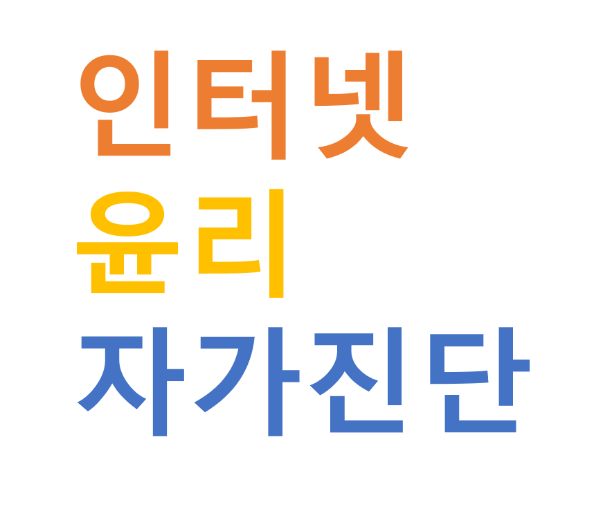

사용방법 각 문항마다 해당되면 1점 해당되지 않으면 0점을 해주세요.
1. 나는 인터넷 윤리에 관해 조금 알고 있다.
2. 나는 인터넷 윤리 실천방안에 대해 알고 있다.
3. 나는 인터넷 중독의 증상에 대해 알 수 있다.
4. 나는 스마트폰 중독, 게임중독의 치료방법에 대해 말할 수 있다.
5. 나는 해킹을 예방하며 개인정보를 보호할 수 있다.
6. 나는 저작권을 지킨다.
7. 나는 상대방을 생각하며 댓글을 쓰며 사이버 따돌림을 하지 않는다.
| 점수 | 0~2 | 3~5 | 6~7 |
| 결과 | 인터넷 윤리를 공부하고 관심을 가지세요! | 인터넷 윤리를 조금 더 알아보세요! | 이 지식을 유지하세요! |